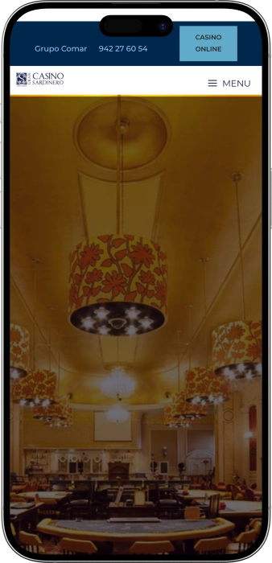

Oferta exclusiva de bienvenida de
Oferta exclusiva de bienvenida de
Experimenta el Casino Más Emblemático de Santander
Los mejores casinos
Detalles de bonificación
Casino
Bonos
Rate
Giros gratis
Más info
Conseguir
Ventajas
- ¿Buscas una experiencia de casino auténtica en Santander? El Gran Casino Sardinero combina elegancia arquitectónica histórica, juegos de primera calidad y gastronomía excepcional frente al mar Cantábrico. Descubre nuestras ventajas:
-
Ubicación única en primera línea de playa del Sardinero con vistas panorámicas al mar Cantábrico
-
Ubicación única en primera línea de playa del Sardinero con vistas panorámicas al mar Cantábrico
-
Ubicación única en primera línea de playa del Sardinero con vistas panorámicas al mar Cantábrico
-
Restaurante gourmet con carta variada y menús degustación con productos locales de Cantabria
-
Atención personalizada por profesionales expertos en un ambiente elegante y acogedor
-
Programa de fidelización con beneficios exclusivos, invitaciones a eventos y promociones especiales
- Únete a miles de visitantes que eligen el Gran Casino Sardinero como su destino de ocio preferido. Nuestro equipo está preparado para ofrecerte una experiencia inolvidable en cada visita.
Gran Casino del Sardinero App


Nuestra Historia en Santander
El Gran Casino Sardinero es uno de los edificios más emblemáticos de Santander por su belleza arquitectónica singular y la historia que encierran sus paredes. Situado en primera línea de la playa del Sardinero, hemos sido un punto de encuentro imprescindible.
- Renovación completa de salas de juego con tecnología de última generación
- Ampliación del restaurante con terraza panorámica al mar Cantábrico
- Introducción de torneos internacionales de póker con premios excepcionales
- Reconocimiento como mejor casino del norte de España por calidad de servicio
Operamos bajo estrictas normativas de juego responsable y seguridad. Nuestro casino cumple con todas las regulaciones nacionales vigentes. La protección de nuestros clientes y la integridad de los juegos son nuestra máxima prioridad en cada momento. Continuamos innovando nuestros servicios gastronómicos y de entretenimiento. Nuestro compromiso con la excelencia nos impulsa a crear experiencias únicas. Visítanos y descubre por qué somos el casino preferido de Cantabria y todo el norte de España.
Guía Completa de Juegos de Casino
Descubre Todos los Juegos del Gran Casino Sardinero
El Gran Casino Sardinero ofrece una experiencia de juego inigualable en Santander con una selección completa de juegos tradicionales y modernos. Nuestras instalaciones cuentan con más de cien máquinas tragaperras de última generación, mesas de ruleta europea y americana, blackjack profesional, póker Texas Hold'em y otros juegos de mesa clásicos. Cada sala está diseñada para proporcionar comodidad, privacidad y emoción, atendidas por crupieres profesionales con amplia experiencia. La atmósfera cosmopolita y elegante del casino complementa perfectamente la experiencia de juego, creando un ambiente único en la costa cantábrica.
Máquinas Tragaperras Modernas
Las máquinas tragaperras constituyen uno de los principales atractivos del Gran Casino Sardinero. Disponemos de más de cien máquinas de diversos fabricantes líderes internacionales, con temáticas variadas que van desde clásicos fruit slots hasta videoslots con gráficos espectaculares en alta definición. Nuestro parque de máquinas se actualiza regularmente para ofrecer siempre las últimas novedades del mercado. Los jugadores pueden encontrar máquinas con diferentes denominaciones, desde céntimos hasta euros, adaptándose así a todos los presupuestos y estilos de juego.
Entre nuestras máquinas más populares destacan los jackpots progresivos que acumulan premios millonarios, las máquinas multijuego con varias opciones en un solo terminal, y las videoslots temáticas basadas en películas, series y franquicias reconocidas mundialmente. Todas las máquinas están certificadas por organismos reguladores y utilizan generadores de números aleatorios auditados para garantizar juego limpio y transparente. El personal técnico realiza mantenimiento preventivo constante para asegurar funcionamiento óptimo y experiencia sin interrupciones.
- Videoslots temáticas: Máquinas con historias envolventes, gráficos cinematográficos, múltiples líneas de pago y funciones bonus interactivas que incrementan las posibilidades de premios grandes.
- Jackpots progresivos: Botes acumulativos que crecen con cada apuesta hasta que un jugador afortunado gana el premio mayor, con acumulados que pueden superar cifras extraordinarias.
- Tragaperras clásicas: Máquinas tradicionales de tres rodillos con símbolos clásicos como frutas, sietes y campanas, perfectas para jugadores que prefieren simplicidad y nostalgia.
- Máquinas multijuego: Terminales que ofrecen varios juegos diferentes en una sola máquina, permitiendo variedad sin cambiar de ubicación en el casino.
- Video póker: Combinación perfecta entre tragaperras y póker tradicional con estrategia, ofreciendo percentajes de retorno competitivos para jugadores experimentados.
Ruleta Europea y Americana
La ruleta es el juego emblemático de cualquier casino y en Gran Casino Sardinero contamos con múltiples mesas de ruleta europea y americana. La ruleta europea, con un solo cero, ofrece mejores probabilidades matemáticas para el jugador con una ventaja de la casa del dos punto siete por ciento. La ruleta americana, con doble cero, proporciona mayor emoción y diversidad de apuestas aunque con ventaja de casa ligeramente superior. Nuestros crupieres profesionales manejan las mesas con elegancia y experiencia, asegurando partidas transparentes y emocionantes para todos los participantes.
Las mesas de ruleta en nuestro casino están diseñadas con materiales de primera calidad, ruedas perfectamente balanceadas y mantenidas según estándares internacionales. Los límites de apuesta son flexibles, permitiendo desde apuestas conservadoras hasta jugadas de alto riesgo para clientes VIP. Ofrecemos fichas de diferentes denominaciones claramente identificadas por color para facilitar el juego. El ambiente alrededor de las mesas de ruleta es vibrante y social, atrayendo tanto a principiantes curiosos como a jugadores experimentados que dominan estrategias avanzadas de apuesta.
- Apuestas internas: Pleno, semipleno, calle, cuadro, línea y otras apuestas directas sobre números específicos con pagos desde seis a treinta y cinco veces la apuesta inicial.
- Apuestas externas: Rojo/negro, par/impar, docenas, columnas y apuestas de bajo riesgo que pagan uno a uno o dos a uno, ideales para estrategias conservadoras.
- Apuestas anunciadas: Vecinos del cero, serie cinco slash ocho, huérfanos y otras apuestas especiales que cubren secciones específicas de la rueda física.
- Límites personalizables: Mesas con diferentes límites mínimos y máximos para ajustarse a presupuestos variados, desde jugadores casuales hasta apostadores profesionales.
Blackjack y Juegos de Cartas
El blackjack es uno de los juegos más populares en Gran Casino Sardinero por su combinación única de suerte y habilidad estratégica. Nuestras mesas de blackjack siguen las reglas internacionales estándar con variaciones opcionales según preferencias de los jugadores. Los crupieres están entrenados para mantener el ritmo apropiado del juego mientras interactúan cordialmente con los participantes. El blackjack ofrece una de las ventajas de casa más bajas en el casino cuando se juega con estrategia básica óptima, atrayendo a jugadores matemáticos y estratégicos que buscan maximizar sus posibilidades.
Además del blackjack clásico, ofrecemos variantes como blackjack español sin dieces, blackjack surrender que permite rendirse perdiendo solo mitad de la apuesta, y mesas con pago tres a dos para blackjack natural. También disponemos de mesas para otros juegos de cartas como baccarat, punto y banca, y póker caribeño. Cada juego tiene sus propias reglas específicas y estrategias óptimas que nuestro personal puede explicar a jugadores principiantes. La atmósfera en las mesas de cartas combina concentración competitiva con camaradería social entre participantes.
- Estrategia básica: Tablas matemáticas que indican la decisión óptima para cada combinación de cartas del jugador contra la carta visible del crupier, reduciendo ventaja del casino.
- Apuestas paralelas: Perfect pairs, twenty one plus three y otras apuestas secundarias que añaden emoción y posibilidad de premios adicionales independientes del resultado principal.
- Seguro y rendición: Opciones estratégicas que permiten proteger apuestas cuando el crupier muestra as o minimizar pérdidas en situaciones desfavorables matemáticamente.
- Baccarat exclusivo: Juego elegante con tres opciones de apuesta simples y ventaja de casa mínima, favorito de jugadores sofisticados y grandes apostadores internacionales.
Póker Texas Hold'em y Torneos
El Gran Casino Sardinero cuenta con sala dedicada de póker donde se celebran partidas cash game diarias y torneos regulares de Texas Hold'em. El póker es un juego de habilidad a largo plazo donde los mejores jugadores consistentemente obtienen beneficios. Nuestra sala de póker atrae tanto a profesionales experimentados como a aficionados que disfrutan del aspecto social y estratégico del juego. Los dealers profesionales garantizan partidas limpias y eficientes, gestionando el ritmo del juego y resolviendo cualquier disputa según reglas internacionales establecidas.
Organizamos torneos semanales con diferentes buy-ins y estructuras de premios para todos los niveles. Los torneos incluyen formatos freezeout, rebuy, y deep stack con distintas duraciones y velocidades de ciegas. También celebramos eventos especiales con garantizados importantes que atraen jugadores de toda España y Europa. La sala de póker dispone de pantallas informativas que muestran estructuras de torneos, listas de espera para cash games, y clasificaciones actualizadas. El ambiente es competitivo pero respetuoso, fomentando el juego limpio y la deportividad entre participantes.
- Cash games permanentes: Mesas con diferentes ciegas y límites activas todo el día, permitiendo entrar y salir libremente comprando fichas según bankroll personal disponible.
- Torneos multimesa: Competiciones estructuradas donde los jugadores compiten eliminándose progresivamente hasta determinar ganador final con premios distribuidos según clasificación.
- Satélites clasificatorios: Torneos económicos donde los premios son entradas para eventos mayores, permitiendo jugar grandes torneos con inversión reducida.
- Programa de fidelización: Sistema de puntos por horas jugadas con beneficios exclusivos, invitaciones a eventos VIP y premios acumulativos para jugadores regulares.
Otros Juegos Tradicionales
Además de los juegos principales, el Gran Casino Sardinero ofrece variedad adicional con juegos tradicionales menos conocidos pero igualmente emocionantes. El craps o dados es popular entre jugadores que buscan acción rápida y ambiente animado alrededor de la mesa. El sic bo, juego asiático de tres dados, proporciona múltiples opciones de apuesta con diferentes probabilidades y pagos. También disponemos de rueda de la fortuna y otros juegos de mesa especiales que rotan según preferencias de clientela regular y eventos temáticos especiales organizados periódicamente.
Estos juegos adicionales aportan diversidad a la oferta del casino y permiten a visitantes experimentar alternativas diferentes a los clásicos habituales. Cada juego tiene características únicas que atraen perfiles distintos de jugadores. Nuestro personal está capacitado para explicar reglas y estrategias básicas a quienes deseen aprender juegos nuevos. La variedad de opciones garantiza que cada visita al Gran Casino Sardinero pueda ser diferente, descubriendo nuevas formas de entretenimiento y emoción en cada ocasión.
- Dados craps: Juego social dinámico con múltiples opciones de apuesta, jugadores lanzando dados físicamente y ambiente participativo único entre todos los presentes.
- Sic bo asiático: Tres dados en jaula transparente con tablero de apuestas complejo ofreciendo desde apuestas simples hasta combinaciones específicas con pagos extraordinarios.
- Caribbean stud poker: Variante de póker contra la casa sin elementos psicológicos, basada puramente en fuerza de manos con jackpot progresivo opcional.
- Rueda de la fortuna: Juego simple y visual donde jugadores apuestan en secciones numeradas y la rueda determina ganadores con multiplicadores atractivos.
Juego Responsable y Seguridad
En el Gran Casino Sardinero promovemos activamente el juego responsable como pilar fundamental de nuestras operaciones. Contamos con programas de autoexclusión voluntaria, límites de apuesta personalizables y acceso a recursos de ayuda profesional para quienes puedan desarrollar problemas con el juego. Nuestro personal está entrenado para identificar comportamientos de riesgo y ofrecer asistencia discreta cuando sea necesario. Creemos firmemente que el juego debe ser entretenimiento controlado y nunca convertirse en problema que afecte negativamente vida personal o familiar de nuestros clientes.
La seguridad física y digital es máxima prioridad con vigilancia constante, sistemas de protección de datos personales según normativa europea, y protocolos estrictos de verificación de identidad. Todas las transacciones financieras están protegidas y auditadas regularmente. El casino cumple rigurosamente con legislación nacional sobre prevención de blanqueo de capitales y protección de menores, verificando edad de todos los visitantes antes de permitir acceso a zonas de juego. Esta combinación de entretenimiento responsable y seguridad total garantiza experiencia positiva y protegida para todos nuestros clientes del Gran Casino Sardinero.
Proveedores de software
Gastronomía y Experiencia Premium
Restaurante con Vistas al Mar Cantábrico
El Gran Casino Sardinero no es solo un destino de juego, sino también una experiencia gastronómica excepcional con nuestro restaurante panorámico con vistas espectaculares al mar Cantábrico. Ubicado estratégicamente para aprovechar la posición privilegiada del edificio histórico frente a la playa del Sardinero, el restaurante combina cocina de alta calidad con ambiente elegante y relajado. Nuestra carta gastronómica destaca por utilizar productos frescos locales de Cantabria, incluyendo pescados del día capturados en aguas cercanas, carnes selectas de ganadería regional y verduras de temporada de huertas tradicionales. El chef ejecutivo y su equipo crean platos contemporáneos con raíces en tradición culinaria cántabra.
Carta y Especialidades Culinarias
La carta del restaurante se actualiza estacionalmente para reflejar disponibilidad de ingredientes más frescos y sabrosos de cada época del año. Durante primavera y verano predominan pescados y mariscos con preparaciones ligeras que realzan sabores naturales del mar Cantábrico. En otoño e invierno la carta incorpora guisos tradicionales, carnes asadas y platos reconfortantes que celebran riqueza gastronómica de interior de Cantabria. Cada plato está cuidadosamente presentado con atención al detalle estético, convirtiendo cada comida en experiencia multisensorial memorable.
Entre nuestras especialidades destacan el besugo a la parrilla con guarnición de verduras asadas, el solomillo de ternera con reducción de vino tinto y patatas confitadas, y la merluza en salsa verde tradicional con almejas frescas. Los entrantes incluyen selección de anchoas de Santoña con denominación de origen, ensaladas creativas con productos ecológicos, y croquetas caseras de diferentes sabores. Los postres combinan repostería clásica con toques modernos, destacando el hojaldre de crema pastelera y los sorbetes artesanales de frutas naturales sin aditivos artificiales.
- Pescados y mariscos frescos: Rodaballo, lubina, rape, bogavante, percebes y otros productos del mar seleccionados diariamente en lonja local con preparaciones que respetan calidad del producto.
- Carnes premium regionales: Ternera de raza tudanca autóctona, lechazo asado tradicional, chuletón madurado con punto perfecto según preferencia del comensal.
- Menú degustación: Recorrido por cocina cántabra contemporánea con ocho platos en porciones apropiadas, maridaje de vinos opcional seleccionado por sumiller profesional.
- Opciones vegetarianas y veganas: Platos completos sin productos animales elaborados con creatividad, sin ser meras adaptaciones sino creaciones gastronómicas independientes.
- Repostería artesanal: Tartas, pasteles y postres elaborados diariamente en cocina propia sin conservantes ni preparados industriales, recetas tradicionales perfeccionadas.
Bodega y Selección de Vinos
El Gran Casino Sardinero dispone de bodega cuidadosamente curada con más de doscientas referencias de vinos españoles e internacionales. La selección prioriza denominaciones de origen de Rioja, Ribera del Duero, Rías Baixas y otras regiones vinícolas prestigiosas de España, complementada con vinos internacionales de Francia, Italia y países del nuevo mundo. Nuestro sumiller ofrece recomendaciones personalizadas según preferencias individuales y maridaje óptimo con platos seleccionados. También disponemos de carta de destilados premium, cócteles clásicos preparados por bartender profesional y selección de cervezas artesanales nacionales.
| Categoría | Especialidad | Descripción | Maridaje Recomendado |
|---|---|---|---|
| Pescados | Besugo a la Parrilla | Pescado fresco del Cantábrico con verduras asadas de temporada | Albariño Rías Baixas |
| Mariscos | Percebes de Cantabria | Percebes frescos cocidos al punto con agua de mar natural | Cava Brut Nature |
| Carnes | Solomillo Premium | Solomillo de ternera con reducción de vino tinto y guarnición | Ribera del Duero Crianza |
| Arroces | Arroz con Bogavante | Arroz caldoso con bogavante fresco y fumet de marisco | Verdejo Rueda |
| Postres | Hojaldre Tradicional | Hojaldre relleno de crema pastelera artesanal con caramelo | Moscatel de Valencia |
| Entrantes | Anchoas de Santoña | Anchoas con denominación de origen sobre tosta de pan | Txakoli País Vasco |
La experiencia gastronómica en el restaurante del Gran Casino Sardinero se complementa perfectamente con el ambiente elegante y las vistas panorámicas. Las amplias ventanas permiten disfrutar de atardeceres espectaculares sobre el mar Cantábrico mientras se degusta excelente comida y vino. El servicio es atento sin ser intrusivo, con personal capacitado que conoce perfectamente cada detalle de la carta y puede aconsejar según preferencias dietéticas o restricciones alimentarias. Reservas anticipadas son recomendadas especialmente para cenas de fin de semana y eventos especiales cuando la demanda es mayor.
Eventos Privados y Celebraciones
El Gran Casino Sardinero es destino ideal para eventos corporativos, celebraciones familiares y ocasiones especiales. Disponemos de salones privados con capacidad flexible desde grupos íntimos de diez personas hasta eventos de más de cien invitados. Cada espacio está equipado con tecnología audiovisual moderna para presentaciones empresariales, pantallas y equipos de sonido profesionales. La versatilidad de nuestras instalaciones permite adaptar configuraciones según naturaleza específica del evento, desde reuniones formales hasta fiestas animadas con música y entretenimiento.
Ofrecemos paquetes completos para bodas, aniversarios, cenas de empresa y presentaciones de productos que incluyen catering personalizado, decoración temática, coordinación profesional del evento y servicios adicionales opcionales. Nuestro equipo de organización trabaja estrechamente con clientes desde planificación inicial hasta ejecución perfecta del evento, asegurando que cada detalle refleje visión y expectativas. La combinación de ubicación privilegiada, excelencia gastronómica y atmósfera única del casino histórico crea marco incomparable para cualquier celebración memorable.
- Bodas y ceremonias: Celebraciones elegantes con menús personalizados, servicio de catering completo, coordinación de proveedores externos y atención exclusiva para novios e invitados durante toda la jornada.
- Eventos corporativos: Reuniones empresariales, presentaciones de productos, comidas de negocios y cenas de gala con servicios profesionales adaptados a necesidades corporativas específicas.
- Celebraciones familiares: Aniversarios, cumpleaños, comuniones y eventos especiales con menús adaptados a todas las edades y ambientes acogedores personalizables según temática deseada.
- Servicios adicionales: Fotografía profesional, música en vivo, decoración floral, animación infantil y otros servicios complementarios coordinados por nuestro equipo especializado.
Ambiente y Arquitectura Singular
El edificio del Gran Casino Sardinero es joya arquitectónica que combina historia centenaria con elegancia atemporal. La fachada neoclásica exhibe detalles ornamentales característicos de arquitectura señorial de principios del siglo pasado, mientras interiores han sido renovados respetando carácter original pero incorporando comodidades modernas. Techos altos con molduras clásicas, lámparas de araña elegantes, suelos de mármol pulido y mobiliario seleccionado crean atmósfera sofisticada sin resultar ostentosa. Cada sala tiene personalidad propia manteniendo coherencia estética general del establecimiento.
La ubicación privilegiada en primera línea de la playa del Sardinero permite vistas panorámicas extraordinarias desde múltiples espacios del casino. Durante el día, la luz natural inunda salones creando ambiente luminoso y energizante. Al anochecer, iluminación cuidadosamente diseñada genera atmósfera íntima y acogedora perfecta para disfrutar de cena romántica o velada con amigos. Las terrazas exteriores están disponibles en temporada cálida, ofreciendo posibilidad de disfrutar del clima cantábrico mientras se contempla el mar. Esta combinación de arquitectura histórica, diseño interior refinado y entorno natural espectacular hace del Gran Casino Sardinero destino verdaderamente único en la costa norte de España.
- Salones históricos restaurados: Espacios que mantienen carácter original con elementos arquitectónicos auténticos complementados con iluminación y climatización modernas para máximo confort.
- Vistas panorámicas al mar: Amplios ventanales y terrazas exteriores con perspectivas privilegiadas de playa del Sardinero y bahía de Santander, especialmente espectaculares durante atardeceres.
- Diseño interior elegante: Decoración equilibrada que combina respeto por historia del edificio con toques contemporáneos, mobiliario confortable y espacios amplios sin saturación visual.
- Accesibilidad universal: Instalaciones completamente accesibles para personas con movilidad reducida, ascensores modernos, rampas adecuadas y servicios adaptados garantizando experiencia inclusiva.
Programa VIP y Beneficios Exclusivos
El Gran Casino Sardinero ofrece programa de fidelización escalonado con beneficios crecientes según nivel de actividad y participación. Los miembros acumulan puntos tanto por juego en casino como por consumo en restaurante, canjeables por créditos de juego, invitaciones a eventos exclusivos, descuentos en gastronomía y otros privilegios especiales. El programa tiene varios niveles desde membresía básica gratuita hasta categorías VIP platino y diamante con atención ultra personalizada. Cada nivel desbloquea ventajas adicionales diseñadas para recompensar lealtad y hacer cada visita más gratificante.
Los miembros VIP de nivel superior disfrutan de anfitrión personal dedicado disponible para resolver cualquier necesidad, acceso prioritario a mesas de juego durante períodos de alta demanda, invitaciones a torneos exclusivos y eventos gastronómicos especiales con chefs invitados reconocidos. También reciben obsequios personalizados en fechas señaladas, bonificaciones sorpresa por juego continuado y condiciones preferenciales en eventos privados organizados en nuestras instalaciones. El programa está diseñado para reconocer y valorar a clientes más fieles creando experiencia verdaderamente diferenciada que va más allá del juego y la gastronomía convencionales.
- Sistema de puntos acumulativos: Cada euro gastado en juego o restaurante genera puntos automáticamente, acumulables sin fecha de caducidad y canjeables por múltiples recompensas atractivas.
- Eventos exclusivos VIP: Cenas privadas con chefs estrella, degustaciones de vinos premium, torneos invitacionales con premios especiales y acceso anticipado a nuevas aperturas o remodelaciones.
- Anfitrión personal dedicado: Para niveles superiores, profesional asignado que conoce preferencias individuales y coordina experiencias personalizadas anticipándose a necesidades.
- Beneficios gastronómicos: Descuentos progresivos en restaurante, reservas prioritarias garantizadas, degustaciones cortesía y maridajes especiales según historial de preferencias culinarias.
Horarios y Acceso al Casino
El Gran Casino Sardinero mantiene horarios amplios para acomodar diferentes preferencias de visitantes. Las salas de juego abren diariamente desde tarde hasta altas horas de madrugada, con horarios extendidos durante fines de semana y temporada turística alta. El restaurante sirve almuerzos y cenas con horarios flexibles adaptados a costumbres gastronómicas españolas. Recomendamos consultar horarios específicos según día de la semana y temporada, especialmente si planea asistir a eventos especiales o torneos de póker programados que pueden tener horarios particulares.
El acceso al casino requiere identificación válida para verificar mayoría de edad legal según normativa española vigente. El código de vestimenta es smart casual elegante, solicitando evitar ropa deportiva excesivamente informal o calzado de playa. El casino se encuentra en zona céntrica de Santander con fácil acceso mediante transporte público, taxi o vehículo privado con estacionamiento disponible en proximidades. La ubicación frente a la playa del Sardinero lo convierte en complemento perfecto para día completo en Santander, combinando turismo, playa, gastronomía y entretenimiento nocturno en experiencia integrada memorable.
Preguntas frecuentes
La edad mínima legal para acceder al Gran Casino Sardinero es dieciocho años cumplidos. Es obligatorio presentar documento de identidad vigente (DNI, pasaporte o permiso de conducir) en la entrada para verificación. El personal de seguridad comprueba rigurosamente la edad de todos los visitantes antes de permitir acceso a zonas de juego, cumpliendo estrictamente con normativa española de juego responsable.
Ofrecemos amplia variedad de juegos incluyendo más de cien máquinas tragaperras modernas, ruleta europea y americana, blackjack, póker Texas Hold'em, baccarat y otros juegos de mesa tradicionales. La sala de póker organiza cash games diarios y torneos regulares con diferentes buy-ins. Nuestros crupieres profesionales garantizan experiencia de juego excepcional en ambiente elegante y cosmopolita único en Santander.
Recomendamos firmemente reservar mesa con anticipación, especialmente para cenas de viernes, sábados y días festivos cuando la demanda es alta. Puede realizar reservas contactando directamente por teléfono o a través del personal de recepción. Para grupos grandes o eventos especiales, sugerimos reservar con varios días de antelación para garantizar disponibilidad y permitirnos preparar experiencia gastronómica personalizada óptima.
El código de vestimenta es smart casual elegante. Solicitamos evitar ropa deportiva excesivamente informal, chanclas, camisetas sin mangas o vestimenta de playa. Los hombres pueden usar pantalones elegantes o vaqueros presentables con camisa o polo. Las mujeres pueden optar por vestidos, blusas elegantes o conjuntos apropiados. Queremos mantener atmósfera sofisticada mientras aseguramos comodidad de todos los visitantes del casino.
Sí, ofrecemos programa de fidelización escalonado donde acumula puntos por juego y consumo en restaurante. Los puntos son canjeables por créditos de juego, descuentos gastronómicos e invitaciones a eventos exclusivos. El programa tiene varios niveles con beneficios crecientes, incluyendo categorías VIP con anfitrión personal y acceso prioritario. Inscribirse es gratuito y comienza acumulando recompensas inmediatamente desde su primera visita.
El casino está ubicado en la playa del Sardinero, zona céntrica de Santander fácilmente accesible. Puede llegar en autobús urbano con varias líneas que tienen parada cercana, en taxi desde cualquier punto de la ciudad en aproximadamente diez minutos, o en vehículo privado con estacionamiento disponible en calles adyacentes. La ubicación privilegiada frente al mar lo hace fácilmente identificable y accesible para visitantes locales y turistas.
Sí, organizamos torneos de póker Texas Hold'em semanales con diferentes estructuras y buy-ins para todos los niveles. Incluyen formatos freezeout, rebuy y deep stack con distintas duraciones. También celebramos eventos especiales con garantizados importantes que atraen jugadores de toda España. La sala de póker dispone de cash games permanentes con diversas ciegas. Puede consultar calendario actualizado de torneos en recepción o contactando directamente.
Absolutamente. Nuestro chef puede adaptar platos para necesidades dietéticas específicas incluyendo vegetarianas, veganas, sin gluten, sin lactosa y otras restricciones alimentarias. Es importante informar sobre alergias o intolerancias al realizar reserva o al llegar al restaurante para que podamos preparar opciones seguras adecuadas. El personal de sala conoce ingredientes de cada plato y puede asesorar sobre mejores alternativas según sus requerimientos.
Sí, disponemos de salones privados para eventos corporativos, bodas, aniversarios y celebraciones especiales con capacidad flexible desde grupos pequeños hasta más de cien invitados. Ofrecemos paquetes completos con catering personalizado, decoración, coordinación profesional y servicios audiovisuales. Nuestro equipo trabaja estrechamente con usted desde planificación hasta ejecución perfecta del evento. Contacte con nuestro departamento de eventos para presupuesto personalizado.
Promovemos activamente juego responsable con programas de autoexclusión voluntaria, límites de apuesta personalizables y acceso a recursos de ayuda profesional. Nuestro personal está entrenado para identificar comportamientos de riesgo y ofrecer asistencia discreta. Cumplimos rigurosamente con normativa española sobre protección de jugadores vulnerables y prevención de ludopatía. El juego debe ser entretenimiento controlado, nunca un problema que afecte negativamente su vida personal.